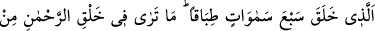
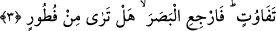

vahdet semâsında uçmak gelir. Çünkü sonradan meydana gelmiş süflî evlerden ayrılmak
ancak bununla hâsıl olur. Vücûb ve kıdem âlemine yükselmek bununla sağlanır. Allah
Teâlâ’nın ihsanından bize kerîm olan yüzünü göstermesini dileriz. Çünkü O iyilik eden
ve esirgeyendir ve O bir ve tek olarak mutlak gâliptir. Kulların kötü amelleri O’na
hiçbir şey kaybettiremez. Dilediğini tevbe etmesi sebebiyle çok bağışlayıcıdır. Tevbe
edeni bağışladığı gibi, Allah bizzat kendi ihsanı ile de bağışlayabilir.
Bâzı âlimler şöyle der: İnsanların uluları kişiler kendilerine aykırı hareket edildiğini
öğrendiklerinde bu davranışı sergileyenleri helâk eder. Bundan dolayı Cenab-ı Hak kötü
amel işleyeni tevbeye teşvik amacıyla aynı zamanda ğafûr yâni çok bağışlayıcı olduğunu
ifâde buyuruyor. Tâ ki tevbe edecek kişiler: “Benim gibiler Allah’tan uzak olup ilişkiyi
kestiği için hizmete ehil değildirler” demesinler. Şu hâlde kötülük yapanın günahlarını
örten mağfiret sâhibi olan Allah nerede, toprak nerede? Allah Teâlâ kendisine güzelce
yönelen kimseyi kabul eder. Nitekim bir hadis-i kudsîde Allah şöyle buyurur: “Bana
yürüyerek gelene ben koşarak gelirim.” [10]
3. O ki, birbiri ile âhenktar yedi göğü yaratmıştır. Rahmân olan Allah’ın
yaratışında hiçbir uygunsuzluk göremezsin. Gözünü çevir de bir bak, bir bozukluk
görebiliyor musun?
“O ki, birbiriyle âhenktar yedi göğü” daha önce geçmiş bir benzeri olmaksızın
“yaratmıştır.” Âyette yer alan “tıbakan” kelimesi “yedi gök” kelimesinin sıfatıdır.
Sayıların sıfatları “seb’a bakaratin simanin” (bk. Yusuf, 12/43) âyetinde olduğu gibi
muzafun ileyh olarak gelir, şeklindeki kural her zaman geçerli değildir. Ayrıca buradaki
yer alan “tıbakan” kelimesini hâl olarak tahlil yapmak mümkündür. Çünkü yedi semâ
bütün hepsine şâmil olmak üzere mârifedir. “Tıbakan” kelimesi masdar olup ism-i fâil
mânâsınadır. Kelimenin sözlük mânâsı; yayılmış olan bir şeyi yine kendi misli olan bir
başka şeye onu kapatacak biçimde kapamak demektir. Buna göre âyet-i kerîmenin
mânâsı; “O ki üstüste gelerek birbirine mutabık olan yedi göğü yaratmıştır” demek
olur. Bu anlayışa göre bir semâ, diğer semânın tam üzerine uygun biçimde getirilmiştir.
Her bir semânın kalınlığı beşyüz yıllık bir uzaklık demektir. Yine her semânın atmosferi
diğerine değmemekte ve herhangi bir direğe de dayanmadığı gibi hiç dokunmamaktadır.
Semâu’d-dünya dediğimiz bize en yakın olan gökyüzü, tutulmuş yâni suyu akmayan bir
dalga mâhiyetindedir. İkinci semâ beyaz inciden, üçüncüsü demirden, dördüncüsü bakır
veya sarıdan, beşincisi gümüşten, altıncısı altından, yedincisi ise kırmızı yakuttandır.
Yedinci ile onun üzerindeki kürsü ve arş arasında nurdan denizler vardır.
Kâşânî der ki: Göklerin yaratılmasında mülk âleminin kemâlinin son noktası, o
semâdan yaratılışça daha sağlamının, düzen açısından daha güzelinin ve birbirine